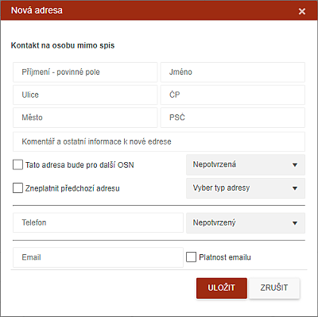
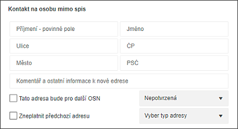
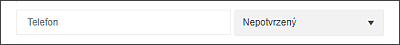
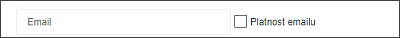

Vložení nového kontaktu osoby mimo spis
Uživatel má možnost vložit nový kontakt k osobě mimo spis. Dialogové okno je rozděleno na několik částí, podle typu získaného kontaktu. Je možné vyplnit pouze jeden z typů kontaktů (adresa, telefon nebo email). Systém pozná nevyplněná pole kontaktu a uloží pouze příslušný kontakt. Například po vyplnění telefonu nebude systém řešit ani adresu ani email.
Tato adresa je zobrazena v podzáložce Kontakty / Kontaktní údaje sebrané.

Pro zadání adresy, emailu či telefonního čísla je třeba vybrat ze seznamu odpovídající jiné osoby ve spise:

Platnost adresy je nastavena na NEPOTVRZENÁ.
Kontaktní telefon jiné osoby ve spise:

Platnost telefonního čísla je nastavena na NEPOTVRZENÝ.
Kontaktní email jiné osoby ve spise:
